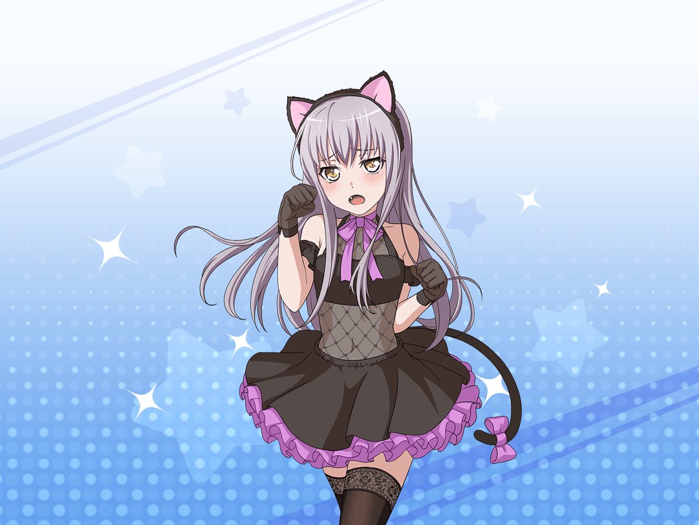

羽丘女子学園 通学路
あこ
友希那さん、友希那さん！
この間のハロウィン楽しかったですね！
友希那
あこ……
またその話？
あこ
だってだって、本当にすっごく楽しかったんですよ！
友希那さん、カッコよかったですし！
友希那
あの日のことは……もう忘れてちょうだい
あこ
えぇ～……
なんでそんなこと言うんですか～！
友希那
ハロウィンから何日経ったと思っているの。
頭を切り替えて練習に集中してほしいわ
あこ
それはそうですけど……
でもでも、おねーちゃんもカッコよかったけど、
友希那さんもすごくカッコよかったですし！
あこ
それに、２人とも真剣勝負って感じで
とっても白熱してましたっ！
友希那
真剣勝負って……
別に、あれは大したことじゃ……
あこ
大したことありますよ！
商店街に響き渡る友希那さんの歌声！
ホントにカッコよかったですっ！
あこ
ライブでもああいう演出しましょうよ！
友希那さんがまた猫の仮装して！
友希那
……やらないわ
あこ
ライブのタイトルも
『堕天使達の晩餐会』みたいな感じで！
友希那
……却下ね
あこ
そんなこと言わないでください～！
あ、でもライブがダメでも
来年のハロウィンでまたやればいいんですよね！
あこ
こころだったら、きっと来年も
イベントやってくれると思いますし！
あこ
友希那さん、来年も一緒に
参加しましょうね！
友希那
勝手に決めないで、あこ。
それに、来年のことでしょう？
あこ
せっかくなら今度は、
Roselia全員で参加しましょうよ！
あこ
えっとー、来年はもっと凝った感じにしてみても
いいと思うんですよねー！
あこ
今年は急遽、友希那さんに『闇の女王』をやってもらったんで、
来年はもうちょっと設定を増やしてみましょっか！？
あこ
そうしたら『闇の女王』に仕える堕天使達は、
あことりんりんがやりますね！
あこ
紗夜さんは……リリスの仮装がいいと思います！
リリスって夜の魔女なんですよー。
紗夜さんぽくないですか？
友希那
あこ、待って。
ちゃんと話を聞いて
あこ
各バンドでテーマを決めて
仮装するのもいいかも！
あこ
いっそのことハロウィンライブやるとか！
わー、絶対楽しいですよ！
友希那
あこ、少し落ち着きなさい。
来年のことより、私達には
やるべきことがあるでしょう？
友希那
Roseliaの音楽の追求……
それが私達の第一にやるべきことよ
あこ
そ、それはわかってますけど
ハロウィンのこと考えると
楽しくて……つい
あこ
友希那さんだって、
つまんなくはなかったですよね？
友希那
悪くはなかったけれど……
でも、あれはただのイベントで
もう終わったことよ
友希那
今日はスタジオ練習が入ってるんだから
頭を切り替えて
あこ
はーい、わかりました……
あこ
…………
あこ
友希那さん、今度新曲作るときに
ダークな世界観な感じにしません？
あこ
イメージは、うーん……
混沌の、鎮魂曲が重なり合って……
えっと、とにかくかっこよくなりそう！
友希那
（……いつまで、
あこの頭はハロウィンなのかしら？）